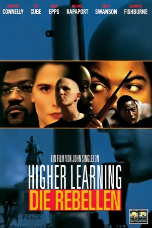

#10698 Die Rebellen
Alternativ: Higher Learning (Englischer Titel)
 
 IMDB-Wertung: 6.5 / 10
IMDB-Wertung: 6.5 / 10  Metascore: 54
Metascore: 54 
Als sich die Jugendlichen Malik Williams, Kristen Connor und Remy an der kalifornischen Columbus University einschreiben, ahnen sie noch nicht, welche Probleme abseits des gewöhnlichen Lernstresses auf sie zukommen. Trotz ihrer unterschiedlichen Ethnien und sozialen Hintergründe haben sie eines gemein: fast täglich erfahren sie Rassismus auf oder abseits des Campusses.
Jahr: 1995
Dauer: 122 Minuten
FSK: 16
Land: USA Studio: Columbia Pictures CorporationTonspuren: DD2.0 - ,
Untertitel:
Auflösung: 1080p (1920x1040) Größe: 9123 MB
Genre: Thriller, Drama, Krimi, Liebe, Sport
Regisseur:  John Singleton
John Singleton
Drehbuch: John Singleton
Soundtrack: Stanley Clarke
Darsteller:
Datei: X:\1995\Rebellen, Die (1995, FSK16, 1920x1040).mkv seit 22.02.2019
Festplatte: Gemischt-01+Anime
 Es gibt insgesamt 85 Filme in der Gruppe '1995'
Es gibt insgesamt 85 Filme in der Gruppe '1995'